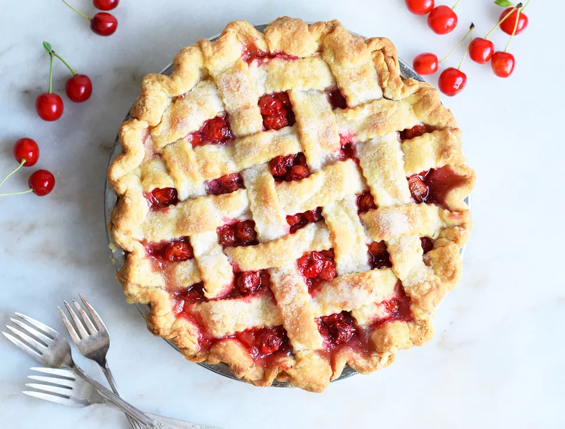

Fey Dumpligs
"A pie truly worthy of Valhala." - Magni

Cherry pies are known for being tart, sweet, and full of juicy goodness.
We used freshly-picked tart cherries, but since they’re only in season for
a short amount of time. You can also use sweet cherries, but lower the
sugar to 3/4 cup and add a bit more lemon juice for that nice tart flavor.
Recipie
Prep Information
- Prep: 30 mins
- Cook: 45 mins
- Total: 75 mins
- Servings: 8
- Yeild: 1 pie
Nutritional Information
Ingredients
For the Pie Crust:
- 1/3 cup cold unsalted butter
- 1/3 cup cold shortening, diced
- 2 1/2 cups all-purpose flour
- 1/2 teaspoon salt
- 1/4 cup cold water
For the Filling:
- 7 to 8 cups fresh tart cherries, or 6 cups frozen
- 1 1/4 cups sugar, divided
- 1/4 cup cornstarch
- 1 tablespoon lemon juice
- 1 teaspoon vanilla extract
- 1/4 teaspoon almond extract
- 1 tablespoon butter, diced
Directions
Prepare the Crust
- Gather the ingredients.
-
Grate the butter with a cheese grater into a bowl. Add the shortening,
flour, and salt.
-
Cut the butter and shortening into the flour with a pastry blender until
the fat is dispersed throughout the flour. The butter and shortening
should all be pea to bean-sized pieces.
- Add the water a little at a time until you have a rough dough.
-
Form the dough into two balls and flatten. Wrap one in plastic wrap and
place in the fridge.
-
Roll one ball of dough into a round that's about 1/8-inch thick and 12
inches across.
-
Fit pie crust into a 9-inch pie dish. Press the dough all the way down
and allow some of the dough to hang over the edge of the pie tin. Set
aside. If your kitchen is warm, place the lined pie pan in the fridge.
Prepare the Filling
- Gather the ingredients. Preheat the oven to 375 F.
-
Pit the cherries using a cherry pitter for the fastest results. Thaw the
cherries if you are using frozen.
-
Thoroughly drain the cherries once you are done pitting or thawing. Then
combine them in a large bowl with 3/4 cup of the sugar, the cornstarch,
lemon juice, vanilla extract, and almond extract. Stir to combine, and
taste. Add more sugar (up to 1 1/4 cups) if necessary and stir to
combine.
-
Fill the bottom pie shell with the cherry mixture and dot the top with
the diced butter.
-
Roll out the other pie dough circle into a 10-inch circle. Cut the
circle into 1-inch strips.
- Lay four of the strips over the filling in the same direction.
-
Fold alternating strips over themselves halfway and place another strip
in the center of the pie to create the lattice design.
-
Fold the strips back over the center strip. Repeat alternating which
strips you fold back.
- Repeat on the other side of the pie.
-
Crimp the edges of the pie crust together, trimming as needed and
sealing.
- Sprinkle the top of the pie with granulated sugar.
-
Transfer the pie to the oven and bake for about 45 minutes, or until the
crust is golden brown and flaky and the filling is bubbly. Cool on a
wire rack for at least 2 hours before slicing.
Nutrition Facts
Per Serving:
501 calories; protein 5g; carbohydrates 81g; fat 18g; cholesterol 95.9mg;
sodium 1161.2mg.
Home